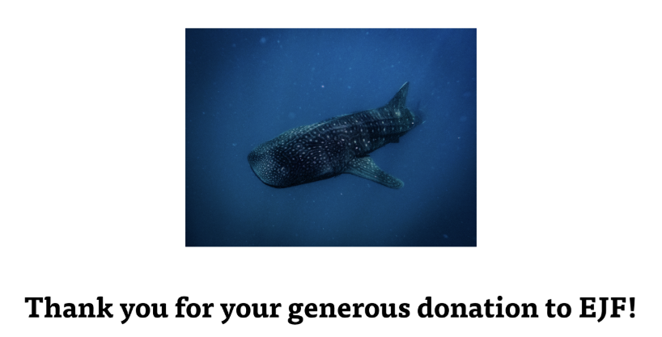

Davis Data Driven Change (D3C)
Role: Designer on a team of 3
|
Timeline: January 2026 - June 2026
|
Tools: Adobe Illustrator, InDesign, Photoshop, Figma
Overview:
D3C is a student organization that inspires social reform through collaborative art, design, tech, and research. As a member of the International Human Rights team, our goal was to create and distribute a zine within Winter and Spring quarter. Our focus was on climate refugeeism in Bangladesh.
The Main Question(s):
How can we facilitate and provide community awareness and tangible support through our project?
The Process:
We ideated with silhouttes, layered visuals, and imagery focused on raising awareness on a personal level, to humanize the data of those displaced. From the beginning, we wanted the zine to be able to fold out and have the ability to be used as a poster. We collaborated with our research team to create visually engaging, data-informed layouts and graphics.
For our design system, we drew color inspiration from the Bangladeshi flag which features green and red. For our fonts, we used IM Fell Double Pica for headers and subheaders, and Courier for body copy. We kept fonts simplistic and legible since our zine would be printed on letter-sized paper.
The Outcome:
The final design of the zine is sectioned into personal story, global impact, and ends on a hopeful note about the actions the audience can take to help. I was tasked with the last section as well as assembling the entire zine and maintaining visual cohesiveness. We added arrows for guidance since our zine strays from how a typical zine flips. Unfolding the zine into its poster form reveals the red circle in the center symbolizing the Bangladesh flag.

After distributing the zines around campus and Downtown, we hosted a pop-up mutual aid cafe with baked goods and coffee as a way to both further distribute the zine and to raise funds for the Environmental Justice Fund. We ended the cafe with $200 raised.

Overall, this was a very fulfilling process with hours spent planning, refining, designing, collaborating, and distributing the zine.